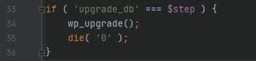
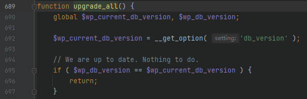
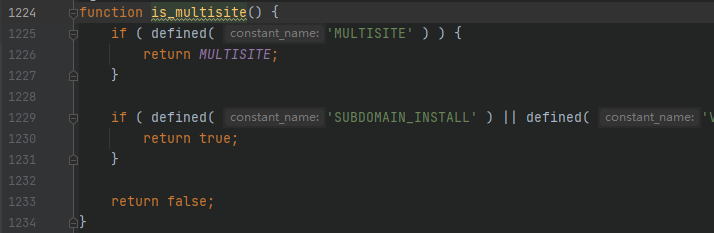
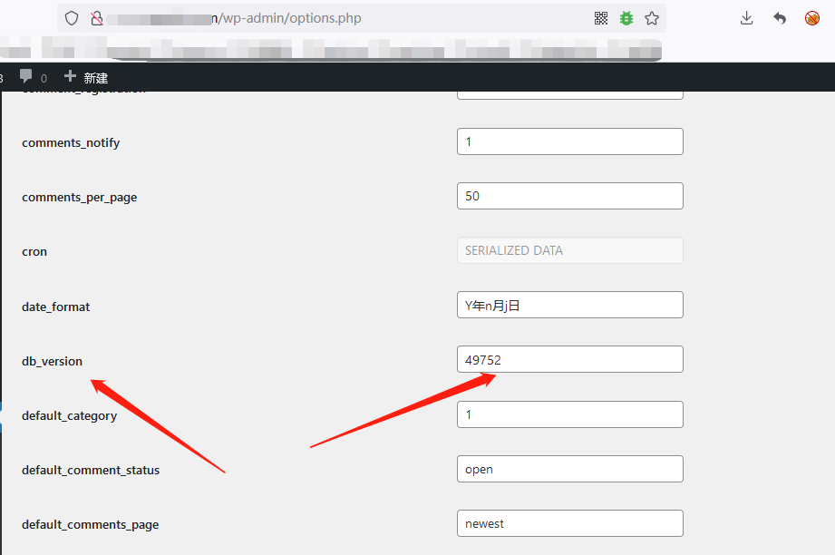
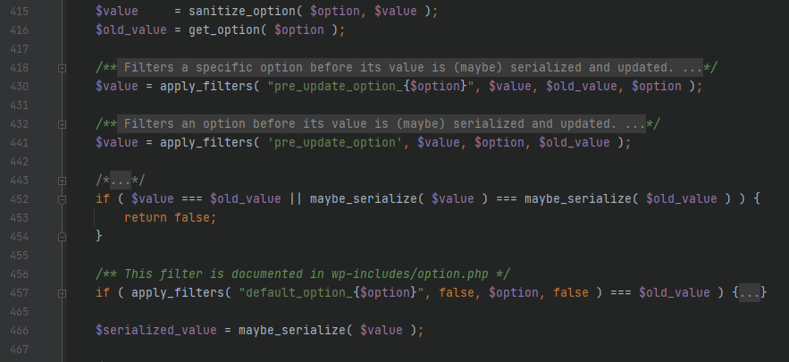
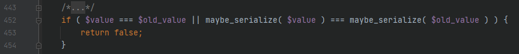
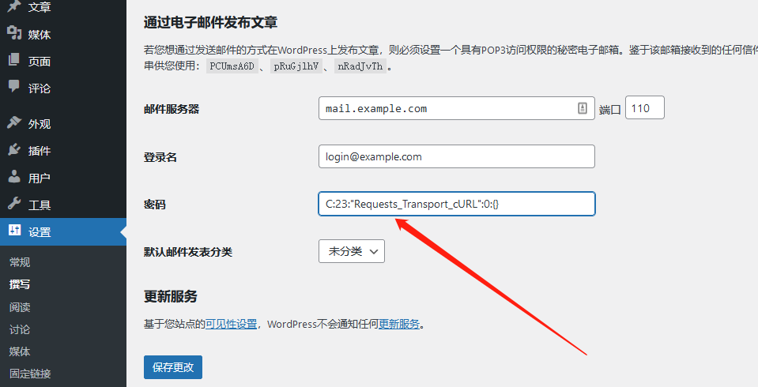
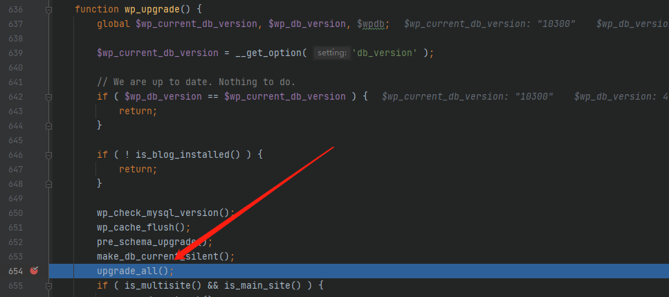
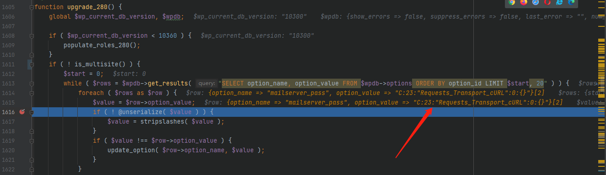

WordPress_5.8.2_对象注入漏洞_CVE-2022-21663
本文首发于奇安信攻防社区：https://forum.butian.net/share/1303
本文仅用于技术讨论与研究，文中的实现方法切勿应用在任何违法场景。如因涉嫌违法造成的一切不良影响，本文作者概不负责。
0x00 漏洞描述
看了 wordpress注入（ CVE-2022-21661 ）的洞之后，发现还存在另外一个对象注入漏洞，具有管理员权限的用户通过更改一些选项，将有机会 getshell。
0x01 漏洞影响
getshell的条件：
wordpress < 5.8.3启用多站点模式
存在一条可用的反序列化链（在本文中不会讲这个）
这是 github上的漏洞修复记录
1 | |

因此这里的环境选择前一条提交
1 | |
0x02 漏洞分析
这里是以我复现这个漏洞时候的角度来分析的，因此会有一些弯路
漏洞入口点
首先来到 wp-admin/upgrade.php，这是管理员可以直接访问到的文件，也是我认为的此漏洞的入口点。

跟进 wp_upgrade函数，来到 wp-admin/includes/upgrade.php

首先看几个全局变量，$wp_db_version在 wp-includes/version.php中定义，根据其定义处的注释来看，这是本安装程序的数据库版本，在下一行中从数据库中取出了 db_version赋值给 $wp_current_db_version，看这情况，大概是一个是固定的数据库版本，另一个是可变的，upgrade.php会时不时地比较，当发生改变时，会进行一些操作
接下来看到我下的断点处，进入 upgrade_all()函数

这里就是在将两个版本进行比较，一致时不发生任何变化，不一致时运行后面的代码，接着看下面

根据从数据库中取出的 db_version也就是此处的 $wp_current_db_version的大小，会进行不同的处理，我们来关注断点处的 upgrade_280函数

看到 1611 行的 is_multisite()，跟进

这是一个判断是否开启了多站点的函数，这也是本漏洞的一个开启条件，必须要开启多站点才可以。开多站点需要改配置文件，我这里图省事儿，直接改了判断条件 !is_multisite()，强行让他绕过了
继续看上面，进入循环，每次从 wp_options表中取 20 条数据，将每一条数据都进行反序列化，漏洞的点就在此处了，因为 wp_options中的数据大部分都是可控的，我们可以通过管理员修改其值，最后进入反序列化。
还有两个问题，第一，如何控制 db_version的值，让他进入我们想要进入的函数；第二，如何更改 wp_options中的值。
数据写入
其实这两个是同一个问题，一并解决，wordpress后台没有直接访问所有 options的按钮，但我们可以访问 wp-admin/options.php

这里可以更改 db_options中大部分的值，包括 db_version，我们将其修改为 10300，就满足了进入漏洞函数的要求，接下来我们尝试写入反序列化字符串
我们先随便选择一个选项写入反序列化字符串，这里我首先选择的是 blogdescription，也就是博客描述，这个也可以在常规选项中更改（更建议，因为需要处理的值会更少，调试没那么费力）,post的数据会逐个进入 wp-includes/option.php中的 update_option，来看几个比较重要的函数（PS：太长截图截不完）

这里首先说明一下 $option是每个选项的键，$value是每个选项的值
首先看到 sanitize_option

这个函数会根据不同的键来选择不同的处理方式，比如一些一定会用整数的，就会intval处理，所以选择的选项也是有讲究的，我之前选择的blogdescription，就因为这个函数而无法使用，他会将一些特殊字符编码，导致无法正常反序列化，这个可以慢慢尝试，尽量选择这个函数不会进行太多处理的选项
最终我选择的是 wp-admin/options-writing.php中的 “密码”（选择 options.php中的mailserver_pass也一样，是同一个），一般来说，密码对字符都不会有太多的限制，至少这里是的
回到之前的 update_option的代码，稍微注意一下这里的比较

如果我们输入的选择没有发生改变，就不会继续后面的代码，继续往下走，进入 wp-includes/functions.php中的maybe_serialize函数

如果是数组或者对象，那么会直接序列化后返回。然后进入 is_serialized函数

这里会取字符串的第一个字符进行比较，这里几乎囊括了反序列化字符串的所有类型，遇到是这一些的，返回后会再次反序列化，也就是进行了二次反序列化，这样几乎是防止了可能的反序列化。
这里遗漏了一个 C类型，官方文档对他的描述是 custom object，自定义对象，这个以前几乎没有用到过，因此这次进行了一次测试
代码：

结果

同一个类，将类型从 O修改为了 C，反序列化运行后，虽然报错，但最后仍然会触发 __destruct方法，因此我们可以将一个正常的反序列化字符串，将第一个字符 O修改为 C，这样就可以逃过这里的二次反序列化，从而将我们的反序列化字符串写入数据库，等待触发即可。
0x03 漏洞复现
本菜鸡找不到 wordpress的链子，只能随意触发一个 __destruct意思意思
这里使用 wp-includes/Requests/Transport/cURL.php中的 Requests_Transport_cURL类
1 | |

查看数据库，并没有被二次序列化

来到wp-admin/options.php，将 db_version修改为 10300

这里一个意外的发现，修改数据库的时候就会触发漏洞入口

成功取出数据库中的反序列化串，并且执行反序列化

触发 __destruct方法

0x04 总结
坑点不少，需要多琢磨，不说了，还是太菜了，都没法搞条链子。